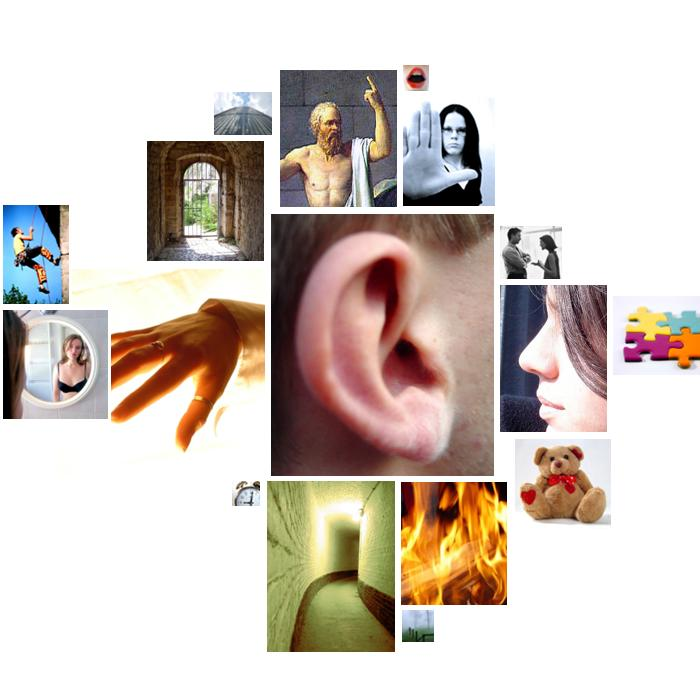
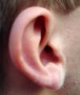
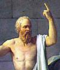

heinz-kerry.txt
  sound
heart, voices, voice, voices, hear, voices, voiced, heart, voices-yours, voices, chords, heart, hearth, chorus, chords
touch
sharpsville, touch, touched
unknown
mystic, mystic, limitless
 moral_imperative
should, right, rights, sanctified, right, right, right, honor, privileged, honest, should, should-by, right, moral, moralistic, moral, shoulders, moral, moral, should
odor
breathe
brink-passage
brimming, barrier, wall, edges, access, line, line
fire
warmth, lit, fire, hearth
narcissism
heart, faces, face, corps, face, heart, face, shoulders, heart, hearth
restraint
arrested, required, policy, must, must, must, bind, obligations, must, must, summoned, require, limitless
affection
love, like, grateful, like, like, like, cherish, like, friends, favor, affection, married
abstraction
something, purpose, why, believe, understand, history, learned, something, believe, may, know, opinionated, opinions-instead, opinionated, different, idealism, real, idea, believed, know, know, believe, possibilities, believes, believes, believes, alternative, believes, believes, believes, knows, importance, mistake, why, believes, true, truth, truth, planet, truly, understands, thoughtless, choices, thoughtful, ideas, example, may, surely, them, possibility, think, possible, know
ascent
dawn, dawn, lift
social_behavior
following, speech, thank, say, speak, invite, conversation, say, taught, education, education, sharpsville, followed, gift, speak, called, called, generosity, thank, meet, share, generosity, confidence-a, represented, election, dependence, protecting, education, protect, speak, speak, speak, responsibilities, accept, met, generous, gift, gift, gift, speaking, said, call, remind, gift
height
grew, higher, higher, spirit, planet
diffusion
mistake
temporal_references
now, tonight, moment, then, years, time, when, years, old, then, everywhere, while, then, soon, tonight, time, past, year, ever, when, time, when, once, again, while, every, every, time, now, time, again, once, again, every, every, when, again, today, again, everyday, everyone
orality
drink, nurture
following, speech, thank, say, speak, invite, conversation, say, taught, education, education, sharpsville, followed, gift, speak, called, called, generosity, thank, meet, share, generosity, confidence-a, represented, election, dependence, protecting, education, protect, speak, speak, speak, responsibilities, accept, met, generous, gift, gift, gift, speaking, said, call, remind, gift